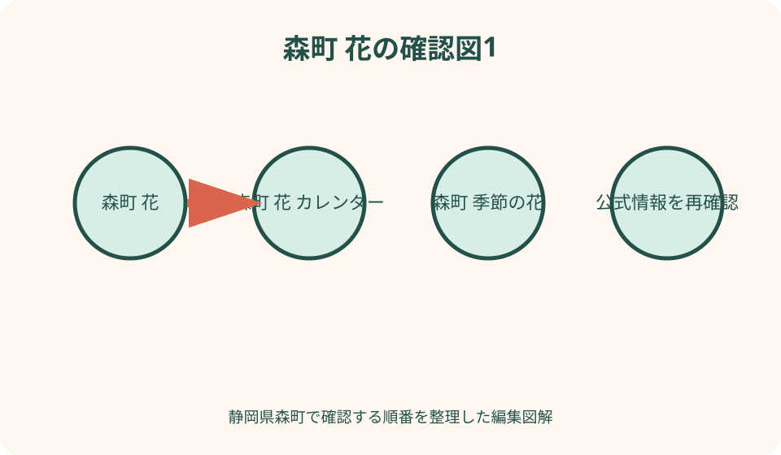
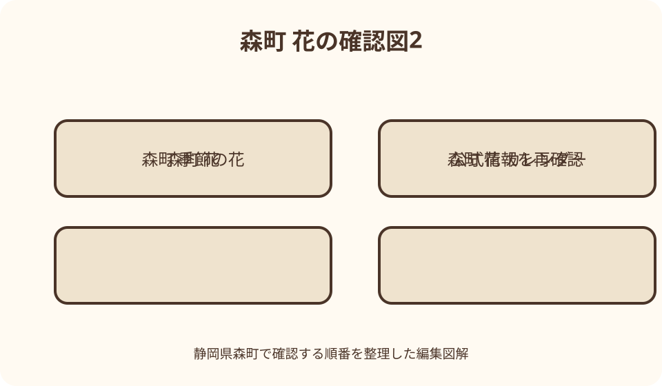

観光・花めぐり｜最終確認 2026-08-10
静岡県森町の花カレンダー｜季節の花めぐりを開花情報から選ぶ
静岡県森町の花めぐりは、春の桜、初夏の小國神社花菖蒲・極楽寺あじさい、初夏から夏の香勝寺ききょう、夏から秋の蓮華寺の萩、晩秋の小國神社紅葉が主な候補です。ただし、例年表記は訪問日の開花保証ではありません。訪問月から候補を二つ選び、森町公式観光ページ、森町観光協会、寺社公式の順に、更新日、写真撮影日、開園・閉園、当日の交通を確認してください。花期がずれた場合は寺社参拝、町並み、茶・和菓子、資料館等へ切り替えます。

編集イラスト年間INDEXの使い方——月から選び、当年情報で決める
この花カレンダーは、見頃の日付を断定する一覧ではありません。訪問月から候補地を選び、当年の開花投稿、写真撮影日、開園状況、交通を確認するための年間INDEXです。
気温、雨、台風、植栽管理により、同じ花でも年ごとに進み方が変わります。「例年六月上旬」を予約日の開花保証へ変えず、出発直前まで公式更新を追います。
候補は一か所へ固定せず、同じ季節に二か所と花期外の一案を持ちます。開花が早い・遅い、園が閉園、駐車混雑という場合でも、森町での一日を組み替えられます。
本記事は二〇二六年八月十日に公式情報を確認しました。各寺社の拝観、開園、料金、撮影ルールは変わるため、記事の数値より当年の運営者案内を優先します。
一月から二月——小國神社の梅を候補にする
小國神社は境内の自然ページで、水晶山に隣接する梅園と紅白の梅を案内しています。冬の候補として使えますが、年始の参拝混雑と開花は別に確認します。
梅は同じ園内でも品種や日当たりで咲き方がずれます。公式の季節の便りに写真が出たら、投稿日だけでなく撮影日、場所、咲き始め・見頃・散り始めの表現を読みます。
初詣時期に花だけを目的に近づくと、駐車や参道の流れが普段と異なります。祭典、交通規制、授与所の案内を確認し、参拝者の動線を遮って撮影しません。
梅がまだ早い場合は、御神木、宮川、西参道等の境内自然を静かに歩く案へ切り替えます。花のために立入禁止区域や植栽内へ入ることはしません。
三月から四月——桜は場所と品種を分ける
森町の春は、小國神社の宮川沿い、太田川沿い、町内各所の桜が候補です。小國神社公式は枝垂れ桜、滝桜、御衣黄、菊桜等を紹介し、品種で時期が異なることが分かります。
森町公式観光ページは当年の桜開花情報を更新する年があります。掲載写真の撮影日と場所を読み、一つの地点の開花を町内全域へ広げません。
河川沿いでは歩行者、自転車、生活車両に配慮し、路上駐車や堤防上の危険な停車を避けます。花見設備や夜間照明があると推測せず、現地案内を確認します。
桜が終わっていた場合は、新緑、寺社、遠州森の町並み散策へ切り替えます。落花後の景色も撮れますが、個人宅の庭や人物を無断で撮影しません。

五月下旬から六月——花菖蒲園は開園日を確認
小國神社の一宮花菖蒲園は、早生・中生・晩生の品種が順に咲くと公式が説明しています。例年の時期だけでなく、当年の開園告知と開花状況を確認します。
公式FAQは、花の状態と天候により開園日時を変更すると明記しています。前年と同じ日に行けば開いているとは限らず、閉園告知も出発前に読みます。
花菖蒲は園の入場時間、料金、株分け販売等が年度で変わり得ます。神社参拝区域と花菖蒲園の入口を混同せず、運営者の当年案内を優先します。
開花が合わなければ、宮川の新緑、小國神社参拝、ことまち横丁へ切り替えます。花菖蒲園の個別記事ではなく、本INDEXでは次候補への接続を重視します。
六月——極楽寺のあじさいは閉園情報まで読む
極楽寺は森町一宮の「あじさい寺」として、森町観光協会が当年の開園と開花情報を案内します。森町公式にも更新ページが作られるため、双方の撮影日を照合します。
あじさいは色づき始め、見頃、終盤で印象が変わり、雨天も足元や撮影条件へ影響します。晴天写真を基準にせず、斜面、靴、傘、寺院内の動線を準備します。
閉園日は花の状態で告知されるため、予定表の月末まで必ず開いているとは限りません。料金、受付時間、駐車、団体利用を当年ページで確認します。
閉園後や花が少ない場合は、一宮地区の寺社、小國神社、天浜線沿線へ切り替えます。境内は観光園である前に寺院であり、参拝と撮影の案内に従います。
六月から夏——香勝寺ききょう園は開花遅れを確認
香勝寺は草ケ谷のききょう寺で、寺院公式が当年の開園変更を告知しています。実際に開花遅れで予定日を後ろへ変更した例があり、固定日を置かない理由が明確です。
ききょう園の株数や紹介文より、最新のお知らせ、開園・閉園、咲き具合を優先します。古いSNS写真を今年の状況と誤認せず、投稿年と撮影日を確認します。
初夏の花菖蒲・あじさいと時期が近く見えても、同日に全て最盛となる保証はありません。三施設の更新を比べ、状態がよい一、二か所へ絞ります。
ききょうが遅い場合は、極楽寺のあじさい、小國神社の新緑、森町立歴史民俗資料館等を代案にします。炎天下の待機を避け、寺院の受付時間を確認します。

夏から秋——蓮華寺の萩は複数の花期を見る
蓮華寺は森町森の「はぎの寺」として観光協会が紹介し、春に咲き始めるもの、夏萩、秋萩など複数の時期を案内します。秋だけの一日へ固定しません。
同じ境内でも品種、場所、剪定で開花が分散します。萩まつりの日程と花の状態は同一ではないため、催事情報と開花写真を別々に確認します。
萩は低く垂れる枝や足元の植栽があり、三脚や大きな荷物で通路を塞がない配慮が必要です。寺宝や堂内撮影は、花の撮影許可と別に確認します。
花が少ない時は蓮華寺の歴史・文化財、森の町並み、和菓子店等へ切り替えます。個別寺院記事と重ならないよう、ここでは年間選択の位置付けに留めます。
十一月から十二月——紅葉は色づき投稿を追う
小國神社は宮川沿いと西参道を紅葉の見所として公式に案内します。例年表記があっても、最低気温や寒暖差、風雨で色づきと落葉が変わります。
公式の紅葉カテゴリは、染まり始め、進行、見頃等の当年情報を掲載します。記事公開日と写真撮影日を見て、数日前の状態から訪問日を断定しません。
紅葉期は参拝者と撮影者が集中し、駐車場や宮川沿いが混雑します。早朝なら必ず空く、ライトアップがあると推測せず、当年の交通・催事案内を確認します。
落葉後は御神木、参拝、町内の寺社、茶・和菓子へ切り替えます。葉を拾う、枝へ触れる、川岸へ下りる行為は現地ルールに従います。
撮影日を読む——投稿日・現地日・訪問日を分ける
開花情報を見る時は、ウェブページの更新日、写真を撮影した日、自分の訪問日を三列にします。更新日に撮られた写真とは限らず、説明文内の日付も確認します。
一枚の接写は花全体の量を示しません。公式が全景、園内区画、咲き始め等を説明しているかを読み、写真映えだけで見頃と判断しません。
SNSでは再投稿、過年度写真、利用者投稿が混在します。寺社や観光協会の公式アカウントか、投稿年、位置情報を確認し、非公式の速報は補助にします。
訪問前日または当日朝に、開園、閉園、雨、強風、交通を再確認します。更新がない場合は運営者へ問い合わせ可能な時間を守り、開花を保証する回答は求めません。
一日に詰め込みすぎない——北・中・南の移動を計算
小國神社は一宮、極楽寺も一宮、香勝寺は草ケ谷、蓮華寺は森にあります。町内でも徒歩で連続できるとは限らず、公共交通、車、駐車時間を個別に見ます。
初夏に三花を回る場合は、開園時間、受付終了、昼食、寺院での滞在を加えます。移動時間だけを足し、各所を十分見られる計画にしません。
天浜線利用では最寄り駅から寺社までの徒歩・バス・タクシーを確認します。帰り便が少ない場合は、花の状態より先に退出時刻を決めます。
車は一宮周辺の混雑、寺院の駐車台数、狭い生活道路を考えます。満車時に路上や近隣店舗へ停めず、当年案内の代替駐車場だけを使います。
雨・暑さ・足元を選ぶ——花ごとに装備を変える
あじさいの雨は魅力でも、寺院の斜面や石段は滑りやすくなります。傘で通路幅を取り、他の参拝者と接触しないよう、滑りにくい靴と小さな荷物にします。
花菖蒲園や川沿いでは、ぬかるみ、虫、日差しを想定します。園内へ長靴が必要かを一律に決めず、当日の運営者案内と天気で選びます。
ききょう・萩の時期は暑さが残る場合があり、受付時間内でも正午の長時間歩行を避ける選択があります。水分、休憩、同行者の体調を優先します。
紅葉期は日没が早く、山際や境内の明るさが変わります。撮影を続けて最終交通や閉門を逃さず、ライトや私有地通過を代案にしません。
撮影マナーを確認する——三脚・人物・祭事を分ける
寺社の花園で撮影できても、三脚、ドローン、商用撮影、モデル撮影、堂内は別の許可が必要な場合があります。入口表示と公式案内を確認します。
花だけを写すつもりでも、参拝者、子ども、車のナンバー、授与所職員が入ります。公開前に個人が特定されないか確認し、無断で人物を主題にしません。
花へ近づくため植え込み、苔、ロープ内へ入らず、枝や花を動かして構図を作りません。落ちた花も持帰り可とは限らないため、管理者へ確認します。
祭事中は参拝と神事が優先です。シャッター音、場所取り、通路の占有を避け、撮影禁止の合図があれば機材をしまいます。
花期外の代案を持つ——参拝・文化・食へ切り替える
小國神社では花菖蒲や紅葉が外れても、参拝、御神木、宮川、ことまち横丁を組み合わせられます。花園の閉園を境内全体の閉鎖と混同しません。
極楽寺、香勝寺、蓮華寺では、寺院の由緒や文化財を確認できます。ただし花園期間外の拝観、堂内公開、御朱印対応は各寺へ確認します。
町なかでは森町立歴史民俗資料館、図書館、和菓子、遠州森の茶等が代案になります。開館・営業を当日確認し、雨天時に全て営業していると考えません。
代案を一つ用意すると、まだ咲いていない花を無理に探したり、閉園後に侵入したりする必要がなくなります。花の状態を旅の成否だけにしません。
半夏生・新緑・山野草を補助候補にする——主役の花がずれた時
森町公式の景観資料は、春の桜、夏の半夏生、秋の紅葉、冬のサザンカという季節変化も挙げています。主要六花の見頃がずれた時は、鍛冶島の半夏生や町内の季節景観を補助候補として調べます。
半夏生は私有地や地域管理の範囲を含む可能性があるため、森町公式観光ページに当年の公開・見学案内があるか確認します。過年度写真だけを頼りに農地や生活道へ入り込まず、駐車場所も公式指定を使います。
小國神社公式は四月から六月頃の山野草や夏の新緑も紹介しています。特定の一輪が必ず見つかるとは考えず、季節の便りで撮影場所と日付を確認し、植生保護のため散策路から外れません。
冬のサザンカや早春の草花は、観光園のような開園期間がない場所もあります。その場合も寺社の開門、祭事、道路状況を確認し、花を探すために個人宅の庭や管理区域を撮影対象にしません。
補助候補は主役の代用品ではなく、その日に実際に確認できた季節を楽しむ選択です。公式更新がない花は『咲いているはず』から外し、町並み散策や屋内施設へ切り替える判断を早めます。
良い点——公式更新を横断して候補を選べる
森町の良い点は、町公式観光ページが桜、花菖蒲、あじさい、ききょう、紅葉等の当年情報へ入口を作り、観光協会と寺社公式へ進めることです。
小國神社は季節の便り、香勝寺は寺院公式、極楽寺・蓮華寺は観光協会の案内があり、場所ごとに運営主体の情報を確認できます。
初夏は複数の花が候補となり、状態に応じて行き先を組み替えられます。全てを同日に回るのではなく、最新写真から選べることが利点です。
花期外にも寺社、町並み、茶、和菓子、資料館があり、開花のずれを一日の失敗にしにくい町です。代案も公式情報で確認します。
注文したい点——例年の見頃を予約保証にしない
注文したい点は、例年の月日をタイトルから抜き出し、航空券や宿の保証情報として使わないことです。花の進行は当年の気象と管理で変わります。
開園予定も、開花遅れ、悪天候、花の終了で変更されます。香勝寺の開園変更や花菖蒲園の状態による変更は、直前確認の必要性を示します。
公式写真でも撮影日が古ければ、今日の状態ではありません。投稿日、撮影日、咲き具合の文章を一組で読み、接写一枚を全景と解釈しません。
花の名所を人気順や絶景順位へ並べません。訪問月、移動手段、足元、同行者、当年開花が合う場所を選ぶ方が実用的です。
対案・結論——二候補＋花期外一案で組む
結論として、訪問月から花候補を二つ選び、花期外の代案を一つ加えます。各候補へ公式URL、最終更新、写真撮影日、開園、交通を記入します。
一週間前に町公式と観光協会、前日または当日朝に寺社公式を確認します。情報が食い違えば、運営者の最新告知または電話確認を優先します。
当日は第一候補の状態と混雑を見て、第二候補へ移るか、代案へ切り替えます。閉園時刻を過ぎてから無理に入らず、次回の候補へ残します。
撮影日は記録し、SNSへ投稿する時も「何月何日撮影」と添えます。翌年の読者が現在の開花と誤認しないよう、年も省略しません。
大石の視点——花を当てるより、外れても成立する一日
大石の視点では、花めぐりの品質は満開を当てる予想力より、開花がずれても森町で一日を成立させる準備で決まります。二候補と代案がその土台です。
公式情報は「見頃」という一語だけでなく、撮影日、開園、閉園、品種差を読みます。更新の背景を見れば、古いカレンダーより判断しやすくなります。
初夏に三寺社を詰め込むより、状態のよい一、二か所で参拝と景色を丁寧に見る方が、移動と撮影の負担を抑えられます。
森町の花は、寺社、川、町並みの季節変化とつながっています。花だけを消費せず、参拝者と地域の生活を尊重して歩くことが次の季節へつながります。
公式情報・確認先
掲載内容は次の一次情報を基礎に整理しました。営業、料金、催し、交通は変わるため、出発前または手続き前にリンク先で最新情報を確認してください。
- 森町公式 観光・当年の花情報（静岡県森町、2026-08-10確認）
- 森町公式 極楽寺あじさい園2026（静岡県森町、2026-08-10確認）
- 森町公式 景観形成方針・四季の花（静岡県森町、2026-08-10確認）
- 森町観光協会 極楽寺あじさい園（静岡県森町観光協会、2026-08-10確認）
- 森町観光協会 初夏の花めぐり（静岡県森町観光協会、2026-08-10確認）
- 小國神社 杜の四季めぐり（小國神社、2026-08-10確認）
- 小國神社 境内の自然（小國神社、2026-08-10確認）
- 小國神社 よくある質問（小國神社、2026-08-10確認）
- 香勝寺ききょう寺公式（www.kikyoudera.jp、2026-08-10確認）
- 森町観光協会 四季のイベント（静岡県森町観光協会、2026-08-10確認）